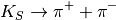
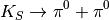

hazma.decay.short_kaon¶
-
hazma.decay.short_kaon(eng_gam, eng_k)¶ Compute dNdE from short kaon decay.
Compute dNdE from decay of short kaon through
 in the
laboratory frame given a gamma ray engergy of
in the
laboratory frame given a gamma ray engergy of eng_gamand short kaon energy ofeng_k.Parameters: eng_gam : double or numpy.ndarray
Gamma ray energy(ies) in laboratory frame.
eng_k : float
Charged kaon energy in laboratory frame.
Returns: spec : np.ndarray
List of gamma ray spectrum values, dNdE, evaluated at
eng_gamsgiven muon energyeng_mu.Notes
The decay modes impemendted are


Examples
Calculate spectrum for single gamma ray energy
>>> from hazma import decay >>> eng_gam, eng_ks = 200., 1000. >>> spec = decay.short_kaon(eng_gam, eng_ks)
Calculate spectrum for array of gamma ray energies
>>> from hazma import decay >>> import numpy as np >>> eng_gams = np.logspace(0.0, 3.0, num=200, dtype=float) >>> eng_ks = 1000. >>> spec = decay.short_kaon(eng_gams, eng_ks)